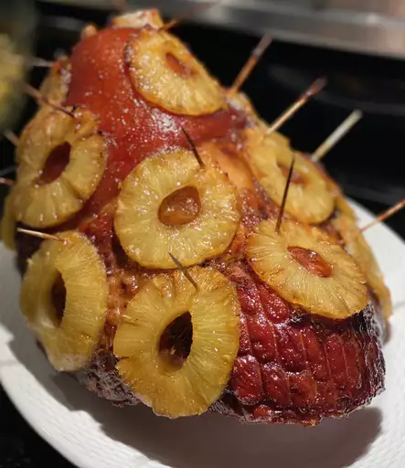

Ham Recipe

Description
Homemade honey glaze brushed over a roasted
succulent ham with sliced pineapples.
Ingredients
- 10lb fully cooked ham
- 1 and 1/4 cup of dark brown sugar
- 1/3 cup of pineapple juice
- 1/3 cup of honey
- 1/3 large orange
- 2tbs of dijon mustard
- 1/4 teaspoon ground cloves
- 1 and 1/2 tsp lemon juice
Directions
- Preheat the oven to 325 degrees F
(165 degrees C). Place ham in a roasting pan.
- Bake ham uncovered in a preheated oven for 2hrs
- While the ham is baking, combine brown sugar,
pineapple juice, and 1/3 cup honey in a saucepan.
Zest orange into the saucepan, then squeeze in
the juice. Add Dijon mustard and ground cloves;
whisk mixture over medium-high heat as it comes
to a boil. Reduce heat and simmer until glaze
thickens slightly, 5 to 10 minutes.
- Taste glaze and adjust seasonings. Add
lemon juice for more tang, or honey to make
it sweeter. Set aside.
- Remove ham from the oven after it has baked
for 2 hours. Brush with glaze. Bake for an
additional 30 to 45 minutes, brushing ham
with glaze every 10 minutes.
Return to top
Return to mainpage